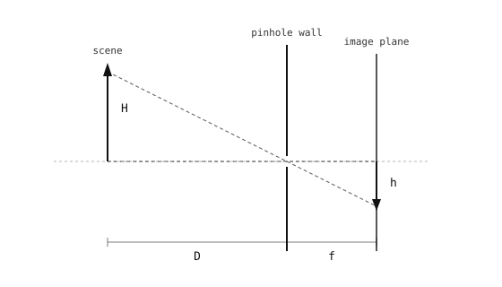

4.1. ピンホールカメラ¶
センサーが存在する前に、まず形成されるべき画像があり、その画像の幾何学的形状は、センサーの前に置かれた光学要素によって決まります。最も単純なそのような要素がピンホールです。不透明な壁に開けられた1つの小さな開口であり、あらゆるカメラレンズの概念的な祖先です。
4.1.1. 画像の形成¶
画像化すべき対象が存在するためには、シーンが照らされている必要があります。太陽やランプ、その他の光源からの光がシーン内の物体に当たり、各物体の各点はその光の一部を吸収し、残りをあらゆる方向に散乱させます。カメラが集めるのは、これらの散乱した光線です。
ある1つのシーン点を離れる光線の大部分は箱の壁に当たって止まります。ピンホールを通過するわずかな光線はそれぞれ直線状に進み、ピンホールの幾何学的形状によって決まる単一の点で箱の背面に当たります。

各シーン点はピンホールを通して背面の壁の固有の点に投影されます。光線がピンホールで交差するため、画像は反転します。¶
上下が入れ替わり、それとともに左右も入れ替わります。カメラはパイプラインのさらに先で両方を元に戻し、最終的な画像が正しい向きに見えるようにします。
4.1.2. 投影の幾何学¶
\(f\) をピンホールから背面の壁までの距離、\(D\) をピンホールから実際の高さ \(H\) を持つシーン点までの距離とします。シーン点の頂部からピンホールを通る直線状の光線は、背面の壁の次の画像高さの位置に到達します。
背面の壁から25mmのピンホールで見た、5m離れた高さ1mの物体は、実際の大きさの \(25 / 5000 = 1/200\) の画像、すなわち壁の上の高さ5mmの反転した矢印として投影されます。
ここでの距離 \(f\) はカメラの焦点距離です。この用語に文字通り長さである設定で出会うと理解しやすくなります。すなわち、結像面とその上に光を集束させる要素との間の奥行きです。後にこのピンホールに取って代わるすべてのレンズも焦点距離を持ち、同じ \(f / D\) の投影スケールが適用されます。
4.1.3. 絞りのトレードオフ¶
数学的に点であるピンホールは、すべてのシーン点について完全に鮮明な画像を作りますが、点は光をまったく集めないため、画像は見えないほど暗くなります。穴を広げるとより多くの光が通過するので画像は明るくなりますが、各シーン点は単一の点ではなく穴の大きさのスポットへと投影されるようになります。画像は同時に明るくなりぼやけていき、鮮明さと明るさの両方をもたらす穴の大きさは存在しません。
レンズはこのトレードオフを解消します。レンズはより広い開口でありながら、入射するすべての光線を壁上の単一の点へと再び集束させるため、画像は（開口が広いので）明るく、かつ（光線が依然として1点で交わるので）鮮明になります。次のページではこれらの観点からレンズを紹介します。